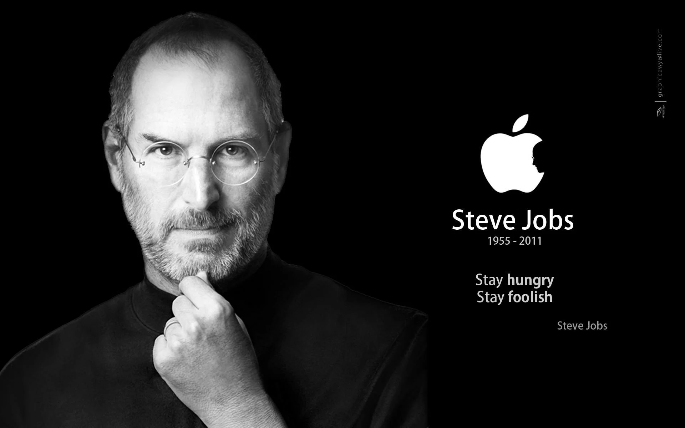

Steve Jobs
A charismatic pioneer of the personal computer era

Steve Jobs was Co-founder, chairman, and CEO of Apple Inc. Co-founder, primary
investor, and chairman of Pixar. Founder, chairman, and
CEO of NeXT.
Here's a time line of Steve Jobs life:
-
24 Feb 1955:- Steve Jobs was born on 24th February 1955 in San Francisco, Californie. -
1 Dec 1973:- In december 173, Steve Jobs attend but later drops out of Reed College. He starts to travel through India until 1974. During his time in India, Jobs become more interested in Buddhism. -
11 Jan 1975:- After coming back from Travelling through India, Steve Jobs starts working on Apple 1 Computer together with Steve Woz. Steve Woznaik attended the first meeting of the Homebrew Computer Club in Gordan French's garage on MArch 5, 1975. He was so moved that he began work on what would become the Apple 1 computer right away. After creating one for himself and demonstrating it to club, he and Steve Jobs distributed schematics(technical design) for the computer tto interested club members, as well as assisting some of them in building and testing prototypes. Then Steve Jobs proposed that they develop and sell a single etched and skillscreened circuit board just the bare board, no electronic components that customers could use to make computers. Woznaik predicated that laying out the board design would cost $1000, with production costing a further $20 per board. The start of selling their first computer was set into motion. -
1 April 1976:- On the 1st of April in 1976 Apple Inc. was incorporated by Steve Jobs, Steve Wozniak, and Ran Wayne. -
Jul 1976:- The Apple 1 went on sale in July 1976 for $666.66 beacuse Woznaik "loved repeating numbers" and because the wholesale price of $500 increased by a third. The first units produced were used in high school math classes and donated to Liza Loop's Public Access Computer Center. About 200 were produced and all but 25 were sold within 9 or 10 months. -
1 Jan 1984:- Macintosh is launched at Apple's annual shareholder meeting. -
12 Jul 1985:- Steve Jobs left Apple and started a new computer firm NeXT. -
12 Dec 1986:- Steve Jobs buys Pixar Animation Studios. -
18 Mar 1991:- Steve Jobs marries Laurene Powel. -
19 Jan 1993:- Toy Story work is haulted and becomes NeXT Software Inc. -
20 Dec 1996:- Apple buys NeXT for $400M. -
6 Jan 2000:- Steve Jobs is back as CEO at Apple Inc. -
23 Oct 2001:- First iPod is introduced and Apple opens retail stores. -
17 May 2005:- Steve Jobs commencement speech at Standford University. In the same year Steve Jobs unveils iWork, the Mac mini, iPOd shuffle and Mac OS X 10.4. -
29 Jun 2007:- Introduction of iPhone, Apple TV and iPod touch. Apple Computers become Apple Inc. -
14 Jan 2009:- Jobs takes medical leave for six months and has surgery for liverr transplant. -
27 Jan 2010:- Jobs introduces iPad, iPhone 4, and iPod touch 4G and new Macbook Air. -
24 August 2011:- Steve Jobs resigned his position as CEO of Apple. -
5 Oct 2011:- On 5th of October 2011 Steve Jobs passes away.